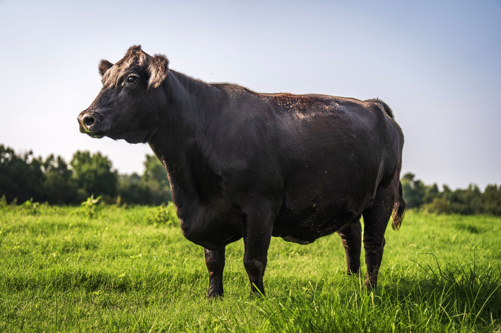

Our Cattle
Black Angus, run on pasture, finished here. What the breed is, how they live, and what actually comes back in the boxes.

Why Angus.
The breed comes from Aberdeenshire and Angus in north-east Scotland, where it was bred on cold, poor ground to put on condition without much help. George Grant brought four bulls to Victoria, Kansas in May 1873, and the American Angus Association was founded in Chicago ten years later with sixty members.
It took over American beef for two straightforward reasons. Angus marble well, which is what people are actually buying when they buy a steak; and they are naturally polled, meaning no horns, which makes every part of handling them safer. In the association's 2026 fiscal year, 332,453 head were registered.
They are also, importantly for us, a breed that will finish on forage. A lot of cattle will not.
The part nobody advertises.
A black animal in a Texas July is working harder than a light one. We would rather tell you how we deal with that than pretend it is not true.
-
Black hide, Texas sun
Dark coats absorb roughly three times the solar radiation that light coats do. A black cow's body temperature climbs about twice as fast in the sun as a white cow's, and Angus cattle under heat load drink substantially more water. Angus are not a heat-adapted breed, whatever anyone tells you — they are a cold-weather breed that happens to be everywhere.
-
So the job is shade and water
Which is one of the genuine advantages of the Cross Timbers: the post oak and blackjack oak are already here. Shade, clean water, and not working cattle in the heat of the day are not optional extras in this county. They are the whole summer management plan.
-
Winter is the easy part
January nights average around 34°F here. For a breed developed in Aberdeenshire, that is mild. Hay goes out from roughly late November to March and that is most of what winter asks.
What a share actually contains.
This is a standard cut sheet for a half share. A quarter is about half of it, a whole is double. The exact numbers move with the animal and with the choices you make.
| Cut | In a half | Note |
|---|---|---|
| Ground beef | 60–70 lb | The largest single part of any share, by a wide margin. |
| Chuck | 20 lb | Roasts, steaks, or both — your call on the cut sheet. |
| T-bone steaks | 20 steaks | Or a New York strip and a filet separately. Not both — a T-bone is those two cuts still on the bone. |
| Round | 14 lb | Steak, or tenderised into cube steak. |
| Ribeye steaks | 12 steaks | Bone-in, or boneless with a rib roast. |
| Arm roasts | 4 × 3 lb | |
| Sirloin steaks | 8 steaks | |
| Stew meat | 10 lb | |
| Rump roast | 2 × 3 lb | |
| Sirloin tip roast | 2 × 3 lb | |
| Short ribs | 3 packages | |
| Brisket | 1 | Whole, untrimmed, unless you ask otherwise. |
| Flank steak | 1 |
The cut sheet is zero-sum, and this surprises people. A T-bone is a New York strip and a filet still joined to the bone. You can have twenty T-bones, or you can have strips and filets separately, but not both — there is one animal and the cuts have to come out of it. Same with a bone-in ribeye versus a boneless ribeye plus a rib roast.
Between 38% and 50% of every share is ground beef. That is not how we choose to cut it; it is how a cow is built. The rib and loin steaks everyone pictures are around 16% of the yield.
From live weight to your freezer.
A finished animal weighs between 1,200 and 1,400 lb on the hoof. That is not how much beef there is, and the gap between the two numbers is where most of the confusion in this business lives.
About 56% of live weight hangs as a carcass. About 62% of the carcass becomes packaged, take-home cuts. The rest is bone, fat and trim. Cattle raised on forage dress out roughly five percentage points lower than grain-finished cattle, because they carry more gut fill and less fat — so a share here returns fewer pounds than a grain-finished share of the same live weight.
Anyone comparing the two on headline price alone is not comparing like with like, and we would rather you had the arithmetic than the slogan.
| Stage | Weight |
|---|---|
| Live weight | 1,300 lb |
| Hanging carcass (≈56%) | 728 lb |
| Packaged beef (≈62%) | 451 lb |
| Half share | 226 lb |
| Quarter share | 113 lb |
| Eighth share | 56 lb |
Dressing percentages from University of Maine Cooperative Extension Bulletin #1072. Every animal is different; this is the middle of the range, not a promise.
The herd.
Photographs from the pasture. Select one to see it larger.
Where a photograph shows cattle that are not ours, it is there to show the breed rather than the herd, and the caption says so. We would rather be straight about that than pass off a stock photograph as a Tuesday in Argyle.
Pick a share and we will tell you which animal.
Availability changes through the year. Ask and we will tell you what is coming and roughly when.